How a job is planned and paid
The scope set describes the type of job. A document, a person or an agent defines this job by publishing project scope artifacts. The requirements are those artifacts added together. Assignees, equipment and the price book meet them through two lists that carry the money, and a committed work order is what a payout is earned against.
One roof, start to finish
| Step | What happens | On the checklist |
|---|---|---|
| 1 · Type of job | The roofing scope set already knows the vocabulary: tear off, dry-in and install are sized in roof squares, and debris disposal is about 0.4 yd³ for each square of each layer torn off. Nothing is required yet. | Empty |
| 2 · Measure | FirstMeasure reports 30 roof squares, 8 of them steeper than 8/12. The steep squares are a part of the 30, not 8 more. | Still empty: measuring a roof requires nothing |
| 3 · Proposal accepted | The accepted roof proposal publishes one artifact. Materials: shingles 96 bundles, underlayment, hip and ridge cap, drip edge (quantities here are for illustration). Work: tear off, dry-in, install, clean up. Functions: debris disposal. It states no amounts for the work, which means “all of it”. | — |
| 4 · Requirements | The artifact, added up. The scope set’s rules fill in the amounts left unstated: tear off 30 sq, dry-in 30 sq, install 30 sq, clean up, and debris disposal 12 yd³ (30 × 0.4, one layer). The material is required as published. | Everything open |
| 5 · Materials list | The artifact’s material lines become a materials list, priced from the price book and ordered from the supplier. | Each material covered by its own lines |
| 6 · Work order for Summit Roofing | Summit is an outside company. Running its pay sheet against the job writes “Tear off and install” — 30 sq × $95 = $2,850, stamped as covering tear off, dry-in and install. “Steep charge” — 8 sq × $15 = $120 only adjusts the price. Clean up is on Summit’s sheet as included at no charge. (Sample rates.) | Tear off, dry-in, install and clean up covered |
| 7 · Equipment | Summit’s pay sheet says it brings a dump truck, included free, providing debris disposal at 12 yd³ per load. It is a line on Summit’s work order. Had Summit no truck, you would pick your own dump trailer or a rental dumpster; its equipment type already says it provides disposal, and the line is stamped with that. | Disposal covered |
| Added by hand | Someone notices a chimney and adds “Wall flashing” from the tray’s “+ Add”. It joins the hand-made artifact and shows as added by hand. Summit’s sheet includes wall flashing at no charge, so generating the work order again covers it. | Open, then covered |
| If the work is split | Give tear-off to another assignee on a second work order. Summit’s single price for tear off and install cannot be split by guessing, so it is charged in full and flagged. | Tear off: paid for on another work order |
| 8 · Commit | The work order is frozen at $2,970 and emailed to Summit as a work order. Whether Summit is free on the day comes from the schedule, not from the commitment. | Unchanged |
| 9 · Finalize | The roof is done. Summit’s work order is confirmed line by line (or with Select all) beside the job photos and finalized: it locks, and its $2,970 becomes an actual cost. A pay rule on Summit’s pay setup earns Summit $2,970 on that date; it goes into the earnings ledger and Summit’s next pay run. | Covered requirements show as completed |
| 10 · Close out | Closeout checks change orders, signatures, payments, the checklist and receipts (warnings only), then finalizes the work orders, and last the final expenses, which include them, close out the project and its finances. | Unchanged |
| All along · History | Every change above is kept with who made it. The work order Summit’s pay sheet generated is a generation run; if someone added a second box of starter strip to it, that is its outcome. Across many jobs, an agent can find that people always add it with Presidential shingles, ask whether that is on purpose, and add it to the generation. | Unchanged |
What is and is not connected
Works today
- An accepted document’s calculation publishes materials, work items and functions as a project scope artifact; a person or an agent can add to them.
- Requirements are the artifacts added together. The scope set only sizes an amount an artifact left unstated.
- A pay sheet generates a work order whose lines say what they cover; the checklist reads coverage from the lists as they stand.
- Equipment types and units say which functions they provide; the functions on offer come from your enabled scope sets. A picked equipment line is stamped with what it provides.
- A work order is committed and delivered. Whether an assignee is free is worked out from schedule events, not from commitments.
- Pay rules read committed work orders, time clock hours and projects, and post earnings to the ledger for pay runs.
- Finished work is finalized (confirmed, locked, earned on that day); closeout finalizes the work orders, then closes the project and its final expenses.
- Every change to a project’s lists, work orders, equipment and scope is kept with who or what made it, and each generation beside what people then changed.
Not built yet
- Your own work items and amount rules. The sizing rules are fixed rules of thumb today.
- An agent editing a document template’s material calculation.
- Documents accepted before this change publish material only, with no work or functions.
- A stated amount when adding a requirement by hand in the Project tab (it is sized from measurements).
- Splitting a requirement by structure (house to one party, garage to another).
- An editor for pay sheets; a rendered work order document. How a person’s pay is set up is on “The person” tab.
- Load weight alongside volume, and a cost per load.
Drawn from docs/architecture: requirements, materials-calculus, pay-sheets, assignees, measurement-schemas, pay-rules, closeout and project-history, 15 October 2026. This tab replaces the earlier drawing, in which requirements came straight from the scope set. Paying suppliers for materials is not shown. Payroll here tracks who is owed what and when; it does not move money.
Who is paid, and how what they are owed is worked out
The other tab follows a job. This one follows a person. An assignee is a user, a group of users or an outside company, placed in the organization’s branches and departments and given permissions through roles and types. Their pay is a ladder of pay rules set in People. The rules read published data, a refresh turns what they say into earnings in a ledger, and a pay schedule decides which pay run each earning lands in. Payroll tracks who is owed what and when; it does not move money or work out tax.
Select any box for what it means in plain words and where it lives.
Two payees, start to finish
| Step | Summit Roofing, an outside company | Dana, an employee paid by the hour |
|---|---|---|
| 1 · Who | An outside company with the company type Roofing, in no branch, so it works in every branch. Listed in People under Subcontractors. | A user in the Scranton branch with the access role Installer, paid as an employee, with the time clock permission from her role. |
| 2 · How pay is defined | The default for all outside companies uses a plan that holds the sample committed labor rule. Summit’s Compensation tab adds nothing of its own. | The default for employees uses a plan with the sample hourly rule. Her Compensation tab overrides one parameter: her rate, $28 an hour from 1 September. |
| 3 · What the rule reads | Labor commitments whose assignee is Summit, earned on the date the work order was finalized. | Approved shifts on the time clock whose assignee is Dana, by period. |
| 4 · Before it is earned | While the roof is still scheduled, Summit’s projection shows $2,970 expected on the day its event ends. Nothing is posted. | Hours are not projected; only what she has clocked shows. |
| 5 · Earned | The work order from the other tab is paid out: every line confirmed beside the photos, then finalized and locked. The next refresh posts $2,970 to the ledger. | 38.5 approved hours × $28 = $1,078, posted for the period. A shift still waiting for approval is not selected, so it is not paid yet. |
| 6 · Pay run | The schedule choice for outside companies picks Summit’s schedule. The earning is in the contractor section of the next run, and copied out as a QuickBooks bill or a Gusto contractor row. | The organization’s schedule choice pays hours every Friday. The draft refreshes first; it is approved (if the organization requires approval), marked entered once put into the payroll software, then paid. Her $40 parking reimbursement is paid in full on its own line. |
| 7 · A change afterwards | Nothing changes: a commitment is never edited. Had the work order been reopened, the earning would be taken back at the next refresh. | After the run is paid, a manager corrects a shift by 1.5 hours. The next refresh finds a $42 difference. It is an increase on an earning already paid, so by default it is paid on the next run as back pay. A decrease would be held in Review for a person to accept or decline. |
Names, branches, rates and hours are examples. The sample rules exist in the starting library; which defaults an organization sets is its own choice.
What is where today
Live on the development site
- Users, groups of users and outside companies on one shared base, with types (roles, one group type, any company types) and traits; employee or contractor on each user.
- Branches, optional regions and per-branch departments behind the multiple-branches feature, with branch-scoped access and roles given in a department, branch or region.
- One permission catalog in categories and subcategories; custom fields on roles, group types, company types and departments.
- People settings: Users, Groups, Departments, Subcontractors, the Branches window and the branch filter, with each payee’s pay on its Compensation tab.
- Pay rules, pay plans and the pay ladder, all dated and versioned with a preview; the same ladder picks the pay schedule; groups paid as one or split.
- Refresh into the earnings ledger, unresolved earnings, evidence, and corrections by the payee’s schedule.
- Pay out per work order and project closeout: piece-rate pay earned on the finalized date; the Requirements tray shows scheduled and done.
- Projected earnings, behind a permission that is on by default.
- The rebuilt Payroll app: pay runs with approval optional per organization, payments outside a run, reimbursements paid in full, Gusto and QuickBooks files, the Review queue and branch scope.
- My pay as the one view of your own pay in the field, project and sales Earnings tabs and in Payroll.
- Scheduling reads the roster: who is on each event, warnings for unmet staffing requirements and double-booking, blocking only where the company chose it.
Not built yet, or deferred
- Checking the Gusto and QuickBooks column mapping on a first real import.
- Wording for branch and region; a People control to move someone between branches.
- Subcontractor onboarding, documents and invitations; restoring an archived user; applying a company’s own permission set.
- An editor for split rules; projecting hours and salary; paying out part of a work order.
- The field and main app split, owned by another thread.
- Later, speed only: indexes and change feeds for pay, faster previews, and reading commitments, the directory and the roster without reading everything (docs/optimization-backlog.md).
Drawn from docs/architecture: assignee-base, assignees, branches, organization-structure, permissions-and-agents, custom-fields, pay-rules, pay-sheets, closeout and schedule-events; docs/optimization-backlog.md; public/v1/payroll/README.md; the Payroll and People apps; and the development rollout records to 15 October 2026. Payroll here tracks who is owed what and when. It does not move money, work out tax or file anything.
The CRM: contacts, leads and how a team works them
There are still only two records, a contact and a project. A lead is a contact with an open opportunity; a new lead is one with no scope yet. The CRM is how a company sees and works those records: saved views shown as lists and boards, worklists worked one record at a time, sources and a funnel read from history, appointments booked on the same scheduling system as production work, and industry building blocks configured by scope sets and presets. Every word comes from terminology, and what a small company does not need stays switched off.
Build progress
The diagram below is the whole system. Select any box for what it means in plain words, its status and where it lives.
Screens, for the frontend pass
What each screen of the CRM app shows and does, as built. The status follows the boxes above. Words in quotes are terminology defaults an organization can rename. Click a row for its detail, or Screenshot for the screen.
| Screen | What it shows and does | Status |
|---|---|---|
| CRM tab and its rail | A left rail of pinned views with live counts, more views, New view, then Funnel, Duplicates, Sources and CRM settings. What the company has switched off is not in it. At phone width the rail slides over the page from the menu button. Screenshot | |
| View header | The view’s name and count (“1 lead”, “9 leads”), layout switch (list or board; agenda for appointments), filter chips with Add filter, Display (group by, sort, columns), search, Worklist, the view menu (pin, rename, duplicate, share, hide, delete), and a save bar when the view was changed: Save for everyone, Save as new view, Discard. Screenshot | |
| Filters | Chips for one condition each; all or any; operators that read like words (is any of, is empty, is before); relative dates (last 7 days, next 7 days); me as a value. The same condition contract as automations and routing. Screenshot | |
| List | Rows with the view’s columns, the contact’s name with the address under it, sortable columns, groups with counts and value, selection checkboxes and a bulk bar: work these, assign, start a scope, follow up, mark lost, tag, merge two. Screenshot | |
| Board | Columns by the group-by field with counts and value; stage columns are the stages of the scopes present plus “New leads”. Dragging to a stage starts or moves the scope; dragging to a person sets that field. Screenshot | |
| Lead drawer | Opens beside the list: the contact and state, actions (call, text, email, set appointment, result, open project, more), the cancellation window with Customer cancelled, each opportunity with scope and stage, source, value, appointments, the rating, the scope’s overview fields (the insurance claim), contact details and history. Screenshot | |
| Worklist | One record at a time in a focused panel: the person, their numbers, history, and the result: what happened, the outcome, a note, when to try again (blank uses the follow-up schedule), Save and next. Skip (S) and Back; worked rows are not shown again. Screenshot | |
| Funnel | Bars for the steps and a table grouped by source, source type, scope, setter, rep, branch or month, with step-to-step rates, spend and cost each. Every cell opens the leads behind it as a view. Screenshot | |
| Duplicates | Suggested duplicate contacts and sales side by side, with why they matched: Keep left, Keep right, or Not the same. Screenshot | |
| Sources | The source tree with channels and matching rules in words, Add under, Edit and Delete; spend per source and period below. Screenshot | |
| CRM settings | Set up for your business (an industry pack and the team size), the funnel steps and what reaches each, and the cancellation rules. Screenshot | |
| Keyboard and phone | / search, f filter, j and k to move through rows, Esc to close, Ctrl+K command menu, S to skip in a worklist. At phone width the list becomes cards, the drawer a full sheet and the worklist the whole screen. Screenshot |


Screens as built
Taken by the CRM browser test (tests/crm-app-browser.test.mjs) against the real server with a sample roofing company. Click one for full size.
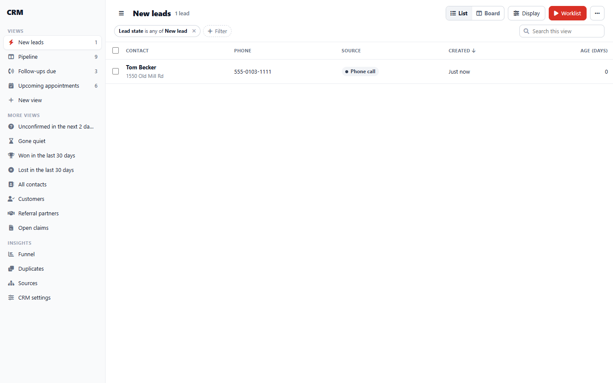
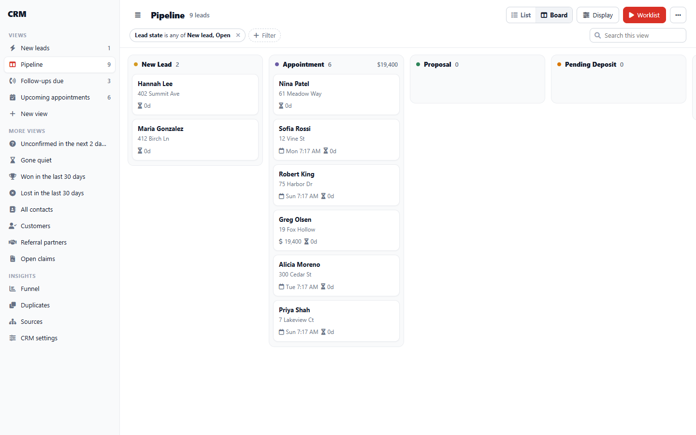
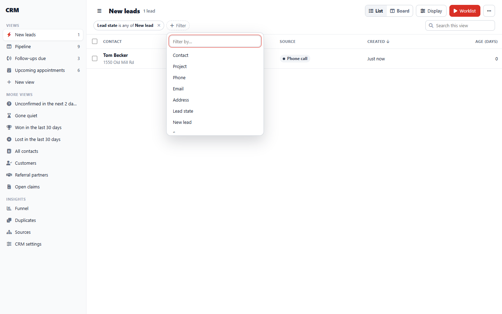
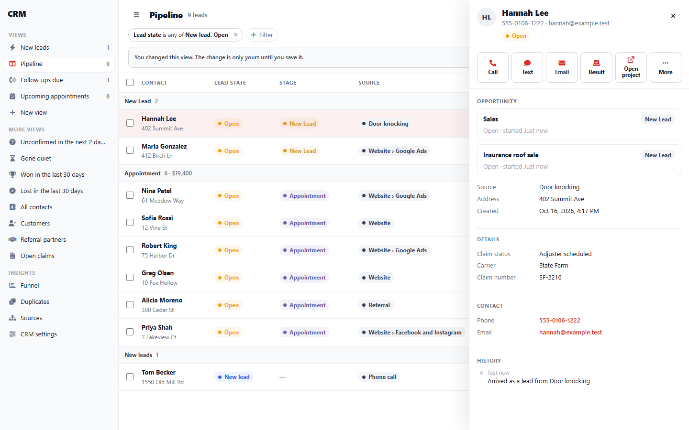
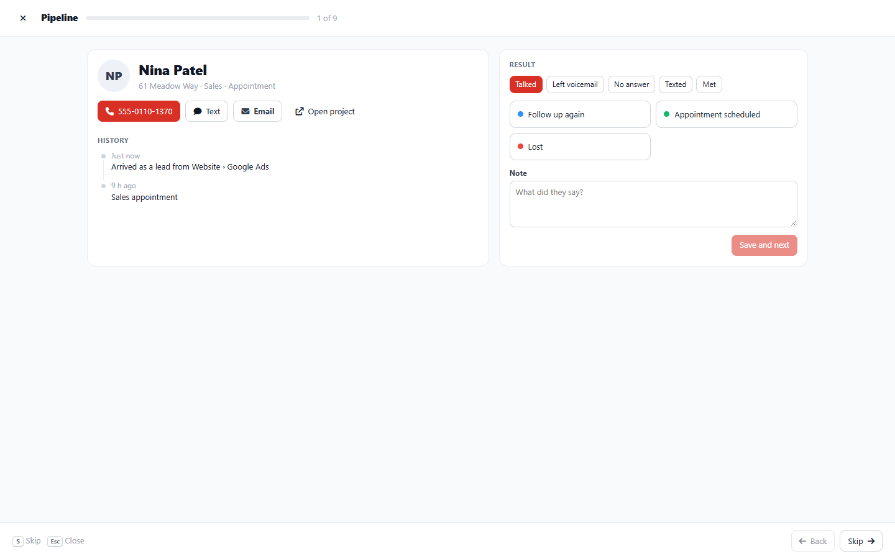
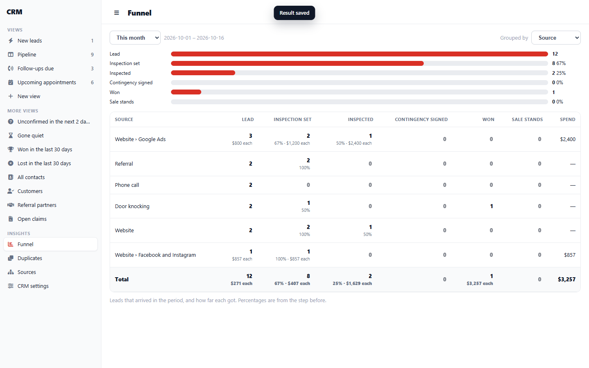
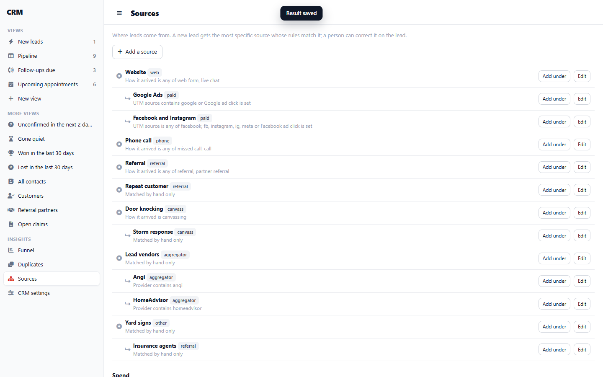
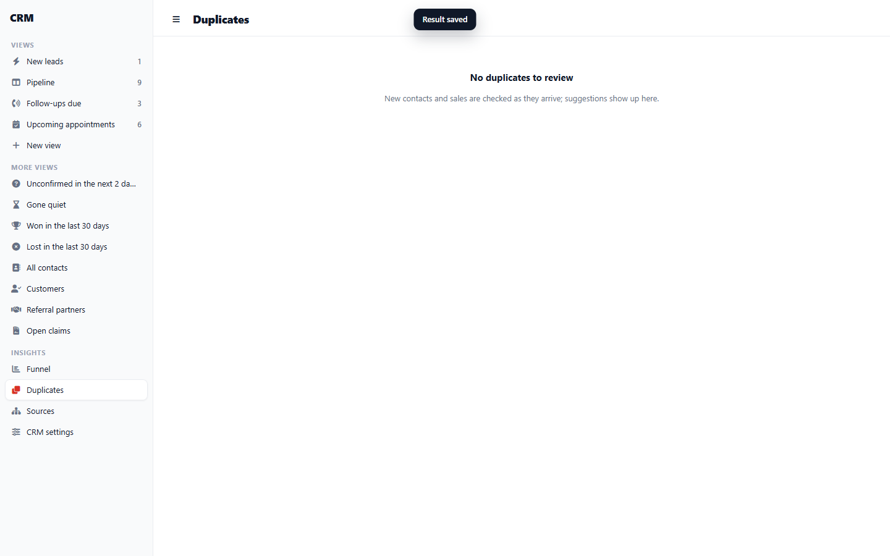
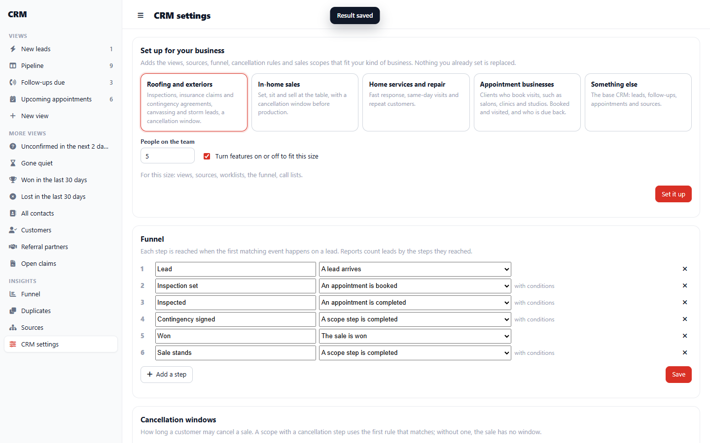
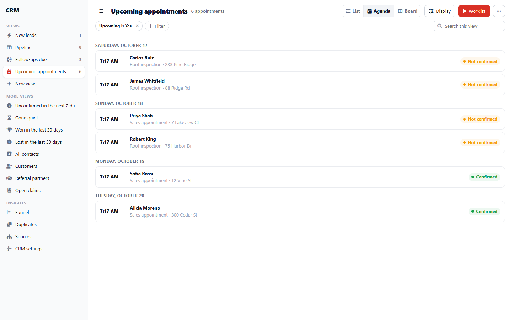
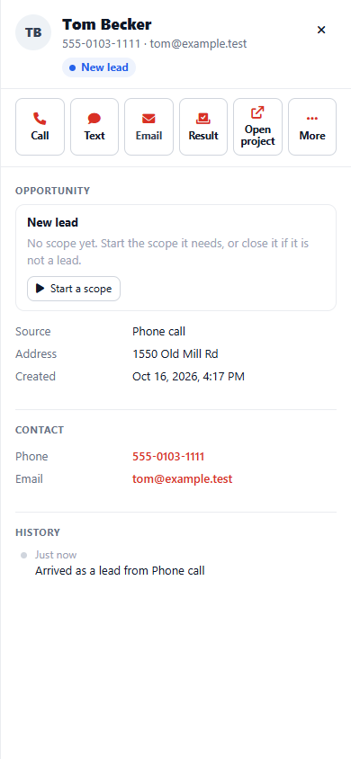
One lead, start to finish
| Step | What happens | Maria is |
|---|---|---|
| 1 · She calls | Maria calls the office after hours and nobody answers. Her number belongs to no contact, so the missed call becomes a contact and a lead (the call setting’s default). Routing leaves missed calls without a scope, so the project is a new lead. The default rules tell inside sales and queue a first call. | A new lead |
| 2 · Worked | Dana opens “New leads” in the CRM and presses Work this list. Maria is first. Dana calls from the panel; it is an insurance roof claim. Dana records the result “Appointment set” and books an inspection from the drawer with the booking dialog, project locked. | A new lead |
| 3 · Routed | Booking an inspection starts the roofing insurance sales scope on her project: her lead now has an opportunity in that scope, and the inspection is the scope’s Set milestone. The scope’s claim fields appear in the drawer. | A lead (open opportunity) |
| 4 · Before the sale | At the inspection she signs the contingency agreement the scope issues; the stage completes on that signature. The claim number and adjuster go into the claim fields. | A lead |
| 5 · Sold | The claim is approved and she signs the contract. The scope marks the sale won and starts the rescission stage: three business days by the federal rule her state follows. Nothing in production starts until it ends. | A customer |
| 6 · Net sale | The rescission stage completes on its deadline, which is the funnel’s Net sale milestone. Production starts. The funnel report counts her under her source (missed call), her setter (Dana) and her rep (the inspection’s assignee). | A customer |
| Later · A review | When the job completes the scope asks for feedback; her rating shows in the drawer and on the contact row. | A customer |
Names are examples. Which scope starts, what each milestone means and whether rescission applies are the organization’s presets and settings; a salon’s walk-in sale has no rescission stage.
Decisions and open questions
Decided
- No lead record. Views, worklists, sources and the funnel read contacts, projects, plans, events and to-dos; none of them stores a lead status.
- Every project runs scopes; a lead with no scope yet is a new lead. Projects start only through receiveLead or createProject.
- Appointments use the scheduling system’s booking dialog and presets, the same as production work. The CRM computes no slots.
- Industry differences are scope sets and presets: agreements before a sale, claim fields, rescission rules, reviews.
- Every CRM word is a terminology key; features a small company does not need are capabilities, off until the setup turns them on.
Open
- Territories and timeslot grids: they belong to the scheduling system for every kind of appointment, so they wait for that design.
- Financing: waits for the finance pass and a partner. The funnel and scopes will read its events.
- Properties and sites as their own record: deferred.
- Referral routes with no login check: proposed as its own task.
Drawn from docs/architecture/crm.md (the CRM design), contacts.md and opportunities.md; deploy/digitalocean/development-new-leads-20261016.md; and public/v1 contacts, leads, scopes, work and comms, 16 October 2026. Statuses are updated as each piece is built and deployed.